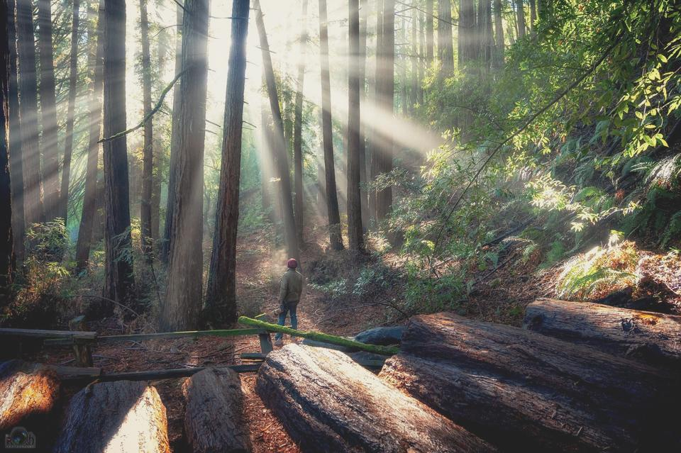
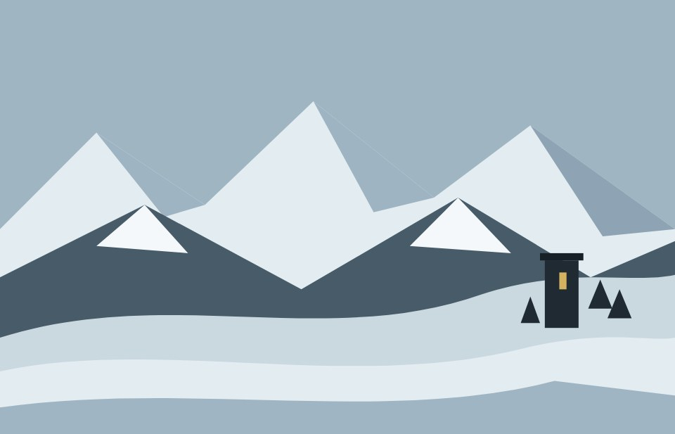
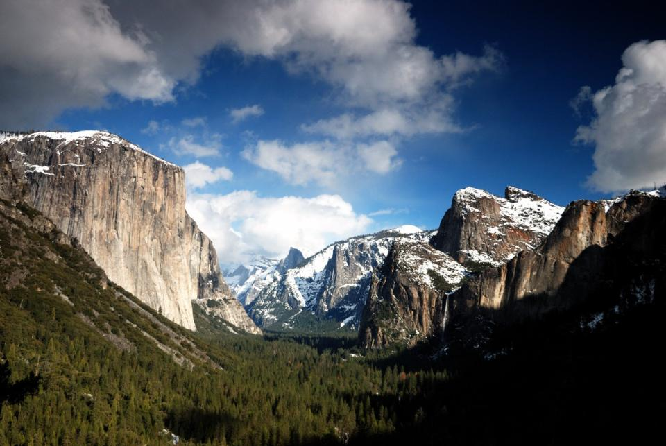
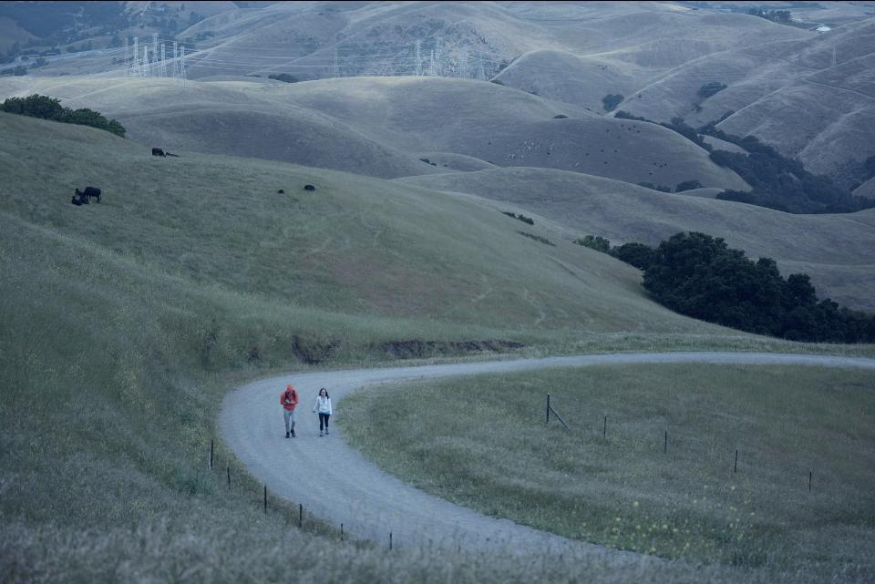
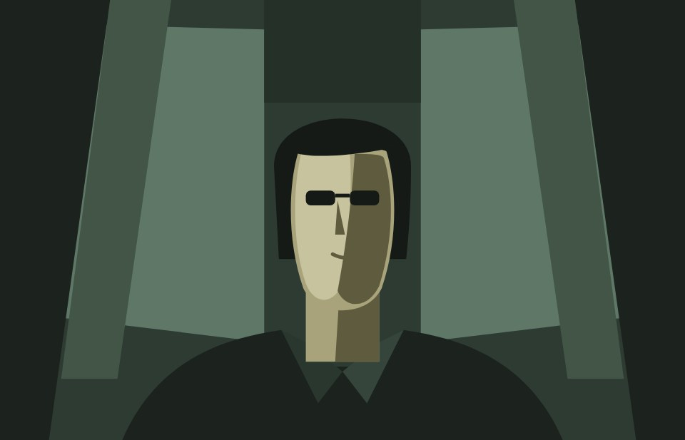
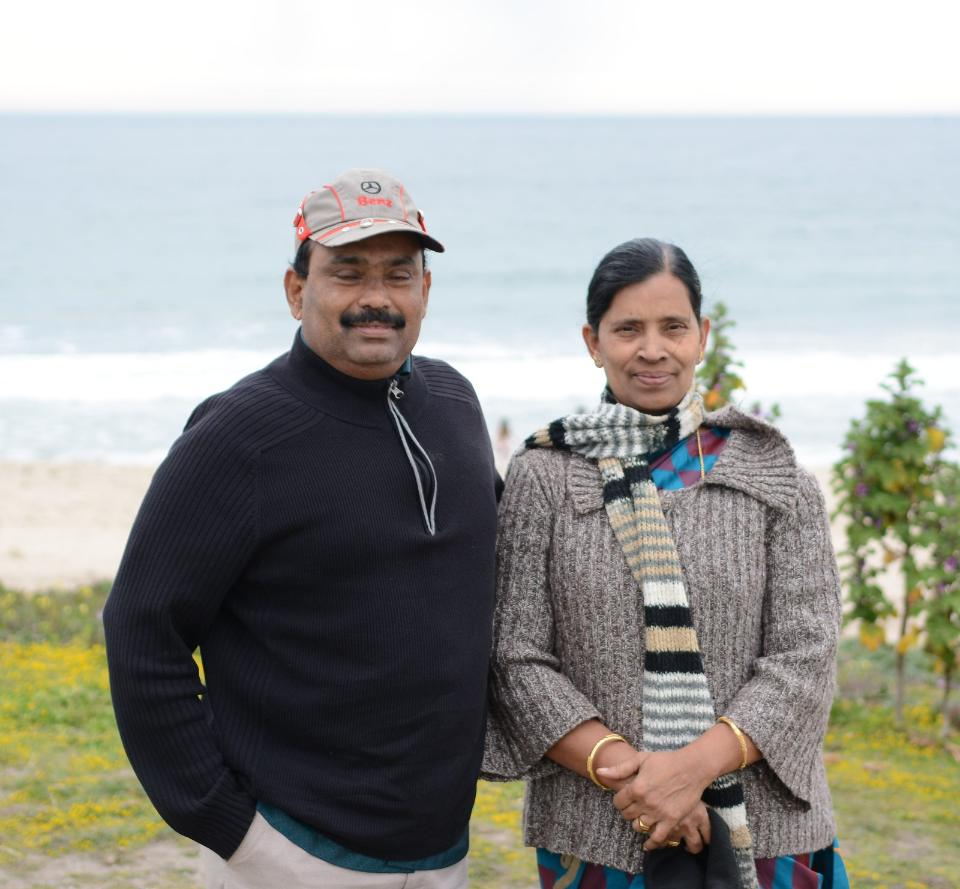
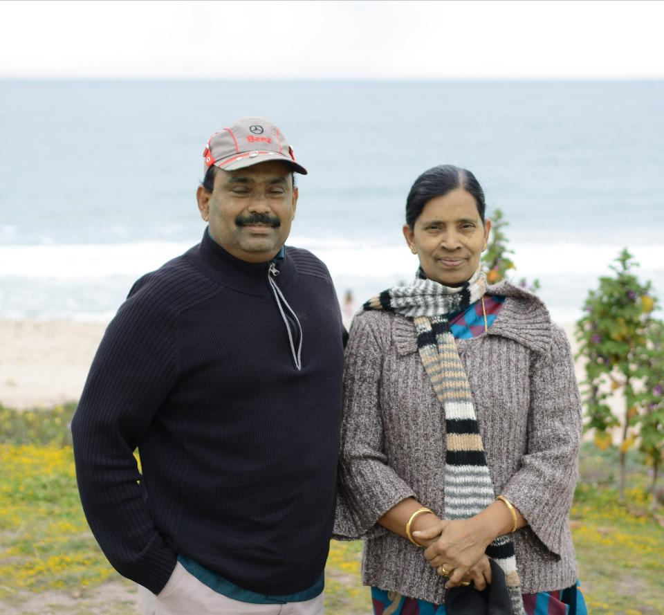

Match Look to a Reference
Give your photo the color and tone of another picture: a photo you admire, a film still, one of your own edited shots, or a built-in color study. The result is ordinary sliders you can keep editing.
 Reference
Reference
Your photo Matched
MatchedOpen it
In Develop: Photo › Match Look to Reference… (⇧⌘M). Or right-click photos anywhere › Match Look to Reference…, which opens them in Develop first.
Choose a reference
- Choose File…
- Any image on your Mac: JPEG, PNG, HEIC, TIFF or a RAW. Or drag an image from Finder onto the reference box.
- Recent References
- The last eight references. Only their location and a small thumbnail are kept; a moved file shows as Missing.
- Catalog Photo…
- Match one of your own shots, with its current edits. Good for making a set consistent.
Built-in References
Click Built-in References below the reference preview. Each look has a portrait and a wider scene, such as an urban night, a winter landscape or desert action. They are flat vector color studies: every area is one plain color, so the look's palette shows clearly. Each portrait face has three flat planes, a highlight, a midtone and a shadow, and the backgrounds are grouped into a few key colors. The cards show each palette and list major color regions such as Face & Skin, Clothing, Sky and Ground. Use the labels to choose a study with a similar balance of colors. The chosen study appears on the left while Atelier fits your photo on the right. A study gives color only: while one is the reference, Tone is unticked and unavailable, so the match never changes your photo's Exposure or Tone Curve. A study's brightness comes from its drawing (a big dark coat, a pale sky), not from the look.
Wide studies use Whole Photo. Portrait studies start on Subject & Background: the study's background is matched to your photo's background and its drawn person to your subject. Choose Whole Photo in Match Areas to match everything at once. Each portrait study has three skin samples, in the face's shadow, its midtone (on the neck) and its highlight, for Match Skin Tone, and Show Skin tints the study's drawn skin. For a face match, pick a portrait study or a photo that shows usable face skin. When you choose a file or catalog photo again, Atelier restores your previous Match Areas choice and any boxes.

Winter Landscape study
Your photo
MatchedPreview, Strength and Show Differences
- The reference is on the left, a live preview of your photo on the right. Press and hold the preview to see it before the match.
- Choose what to match: White Balance (Temp and Tint), Tone (Exposure and the Tone Curve), Color (Saturation, HSL and Color Grading). Use Skin Tones to choose how to handle face color.
- Drag Strength (0 to 100) to blend between your current look and the full match.
- Click Show Differences to list every slider that will move, from its current value to the new one.
- Click Apply. Nothing changes on your photo until then; Cancel leaves it exactly as it was.
Apply is one history step (Match Look: name). Everything it sets is an ordinary slider, so you can adjust, undo, copy or save it as a preset. No AI touches the pixels.
The match is quick because Atelier renders your photo only a few times. It fits White Balance and Exposure on real renders, renders the photo once more, and works out every other slider from that render. It then checks the result with one more real render and settles Exposure on it.
- Match: what the match may change. Turn off any of the three to leave those sliders alone.
- Skin Tones starts at Protect Skin Tones when Atelier finds a face in your photo and Off otherwise. Show Skin tints the skin it measures.
- Match Areas: Whole Photo, Subject & Background, or Boxes.
- Strength scales everything the match sets, including the subject and skin mask sliders.
What the match sets
- White Balance matches the color of the neutral parts of the scene (grays, whites, pale surfaces), not the average of everything, so a big green field or blue wall doesn't turn your photo magenta or orange.
- Tone sets Exposure (at most one stop either way), then a seven-point Tone Curve that follows the reference's contrast without lifting your shadows to gray. Blacks stay black and whites stay white unless the reference itself is faded or matte; then the curve lifts blacks (at most to 15%) or softens whites (at most to 92%) the same way.
- Color sets Saturation and HSL, then the Shadows, Midtones and Highlights wheels in Color Grading, so dark tones take the reference's shadow color and bright tones its light color, such as teal shade with warm light.
Skin Tones
Choose Off to let the ordinary match set face color. Your choice stays selected while the dialog is open, even when you switch references.
Both treatments work on the face skin Select People finds (without eyes, brows and lips), in your photo and in the reference. Tick Show Skin next to the Skin Tones menu to see that skin tinted red on both pictures before you apply. If no face is found, Atelier falls back to the middle of each face box.
Protect Skin Tones
A strong look, such as teal and orange or a cold film stock, can turn skin orange, green or grey. With Protect Skin Tones on, the skin Atelier finds is left out of the match, and the match may move its color by only a little (at most 5° of hue and 15% of saturation). The rest of the photo takes the full look; the skin is held at its own colors in its shadows, midtones and highlights with the Match Look: Skin masks, which you can edit in Masking (⇧W) after Apply. Only when the masks can't hold the skin is the whole match made weaker.
Atelier does this with ordinary sliders. It first turns back the HSL Hue and Saturation of the colors skin falls in (Orange, usually), when Color is on. If that isn't enough, it pulls White Balance, Saturation and Color Grading back toward where they were, just as far as needed. If that still leaves the skin outside the limits, Atelier backs off the rest of the match too. Show Differences lists the changes once the new match is ready.
If the photo has no usable face skin, the dialog tells you.
Match Skin Tone
Choose Match Skin Tone to bring the color of faces toward the reference, tone by tone: skin in light, in midtone and in shade each takes the reference's color for that tone. Atelier uses three masks on everyone's Face Skin (a Select People part; ellipses over the face boxes when Select People finds no one): Match Look: Skin for the midtones, and Match Look: Skin Shadows and Match Look: Skin Highlights, which add a Luminance Range so they reach only the darker or brighter skin. Each skin slider moves at most 35 from where it was. You can use it by itself by clearing White Balance, Tone and Color. Keep Tone selected if you also want the ordinary brightness match. If either image lacks usable face skin, the dialog names that image and you can still apply the other selected adjustments. With several photos selected and usable skin in the reference, Atelier can still match faces in the rest of the selection.
Use Show Differences to see the skin sliders at the current Strength. After Apply, open Masking (⇧W) and choose one of the Match Look: Skin masks to edit Temp, Tint and Saturation, refine the Luminance Range, or click its Select People part to choose one person or tick Body Skin to carry the change to neck and hands.

Portrait study
Your photo
Skin tone matchedMatch Areas
When the reference shows different things from your photo, choose how they match in the Match Areas pop-up menu:
- Whole Photo
- The whole reference sets the look for the whole photo. This is the default.
- Subject & Background
- Atelier finds the subject (people, animals, objects in front) in both pictures, so there is nothing to draw. The background is matched to the reference's background with the usual sliders. Then a mask named Match Look: Subject (a Select Subject mask) gets its own Temp, Tint, Exposure and Saturation, so your subject matches the reference's subject. You can edit or delete the mask in Masking like any other. Running Match Look again updates the same mask and keeps adjustments outside the checked categories. If Atelier can't find a subject in either picture, it matches the whole photo and says so.
- Boxes
- A box appears on each image: drag them over the parts that should match (skin to skin, sky to sky) and drag a corner to resize. The boxed areas count most, and the rest of each picture a little, so the whole photo still moves sensibly.
Several photos
With several photos selected in the filmstrip, choose:
- Same settings
- One match, on the open photo, applied to all. Like Sync.
- Match each photo
- Each photo matched on its own, for mixed light. Runs in the background with progress and Cancel in the status bar. Match Skin Tone selects this option so the face masks are placed for each photo.